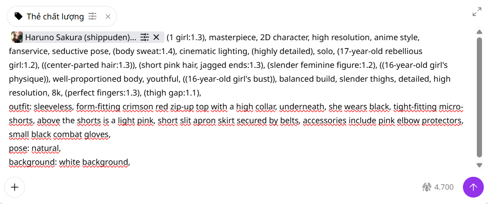
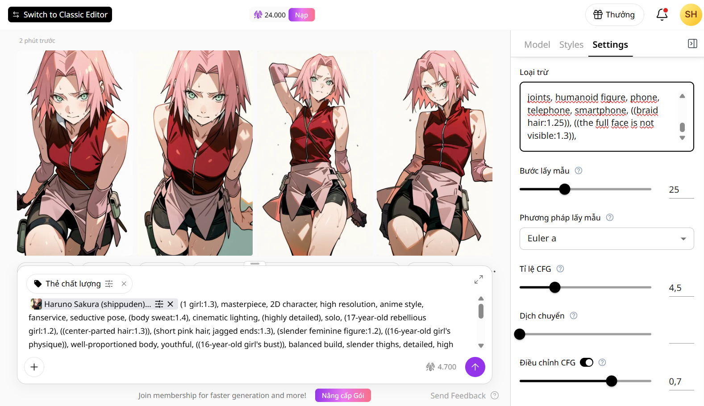

(1 girl:1.3), masterpiece, 2D character, high resolution, anime style,
fanservice, seductive pose, (body sweat:1.4), cinematic lighting, (highly
detailed), solo, (17-year-old rebellious girl:1.2), ((center-parted
hair:1.3)), (short pink hair, jagged ends:1.3), (slender feminine
figure:1.2), ((16-year-old girl's physique)), well-proportioned body,
youthful, ((16-year-old girl's bust)), balanced build, slender thighs,
detailed, high resolution, 8k, (perfect fingers:1.3), (thigh gap:1.1),
(lưu ý: đoạn trên là Prompt cơ bản cho Sakura, tức là chỉ có cái mặt và
cái thân (đồ lót), yêu cầu bạn hãy tự sáng tác thiết kế thêm về outfit,
pose, background,...)
(Lưu ý chỉ thêm đoạn này khi bạn muốn tạo ảnh nude, còn không hãy bỏ
qua đoạn này!):
((uncensored nude:1.4)), erotic position, body sweat, black hairy
vulva, ((mons pubis, labia majora, clitoral hood, clitoris, labia minora,
urethral opening, small vagina opening:1.5)), ((sharp vulva:1.45)),
((detail vulva:1.45)), (vaginal lubrication flowing out:1.116).
bad quality, low quality, worst quality, lowres, jpeg artifacts, scan
artifacts, mosaic, cropped, error, fewer digits, bad reflection, bad
composition, bad anatomy, bad hands, bad fingers, missing fingers, extra
hands, extra legs, excess fingers, light particles, artist name, text,
watermark, username, copyright name, a hairband, a headband, blurry,
realistic style, 3D, photorealistic, wrong outfit, wrong color scheme, big
breasts, penis, add stickers, add black bars to cover, add covering
objects, against the command, intentionally cover sensitive areas,
intentionally cover the cunt, not hentai, not nude, four fingers, six
fingers, abnormal hand, unclear small details, unclear vulva details,
unclear vaginal details, unclear vulva/vaginal line details, jagged female
genital details, jagged vulva, jagged vagina, missing finger, a stranger’s
hand, pink lips, glossy lips, shiny lips, lipstick, lip tint, lip gloss,
beautified lips, sexy lips, makeup, heavy makeup, nipples, adult, wearing
earrings, man, penis, wearing accessories on the head, symbols on the
face, marks on the face, symbols on the forehead, overly large thighs,
covered forehead, obscured hairline, adorned head, blurred vulva, cheek
marking, fully clothed, modest outfit, censored, covered body, men’s
muscles, (muscular:1.5), (abs:1.5), (six pack:1.5), (bodybuilder:1.5),
(manly:1.2), (masculine:1.2), pectoral muscles, bulky, veins, bicep,
ripped, fitness model, elf ears, bat ears, demon ears, long ears, robot,
robot joints, doll, doll joints, humanoid figure, phone, telephone,
smartphone, ((braid hair:1.25)), ((the full face is not visible:1.3)),
(Đây là đoạn negative dành cho Model "Tsubaki" sau nhiều lần thử nghiệm
thất bại mà tôi đã đúc rút ra, tôi tin chắc đây là đoạn hoàn hảo nhất
dành cho tôi và cũng như cho bạn; nhưng quan điểm mỗi người là khác
nhau. Vì vậy bạn có thể auto sử dụng cho tất cả các nhân vật có áp dụng
model "Tsubaki" hoặc không vừa ý chỗ nào thì bổ sung thêm theo ý muốn
nhé!)

